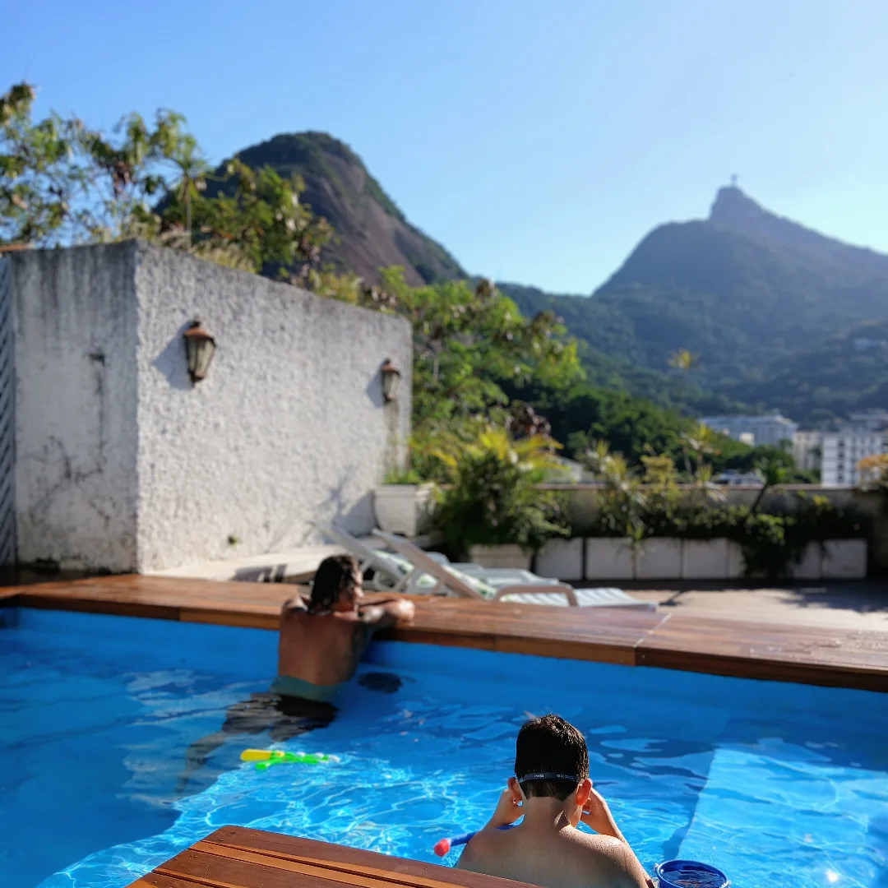
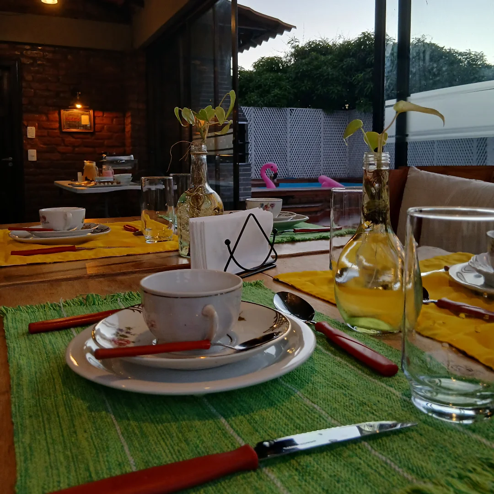
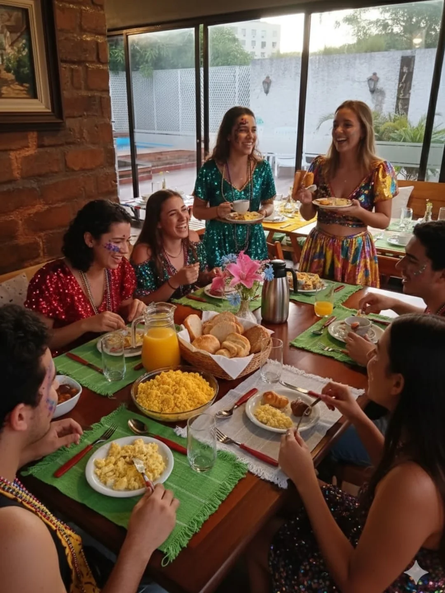

Cardápio Nordestino
Pratos autorais que celebram a riqueza da gastronomia nordestina

Carne de Sol Gourmet
Camarão Nordestino

Drink Mirante
Cardápio completo disponível no local
Fazer ReservaExperiência Completa: Hospedagem, Gastronomia & Lazer
Incluindo o Antônio Restaurante - Gastronomia Nordestina com Vista para o Cristo Redentor
O Mirante de Laranjeiras é muito mais que um simples local - é uma experiência completa que combina hospedagem de luxo, gastronomia de excelência e um ambiente único com vista privilegiada para o Cristo Redentor.
Aqui você encontra suites premium, o Antônio Restaurante com culinária nordestina autêntica, deck de piscina com vista panorâmica, e um ambiente perfeito para eventos e celebrações. Cada detalhe foi pensado para proporcionar uma experiência inesquecível.


O Antônio Restaurante é um espaço dedicado exclusivamente à gastronomia nordestina de excelência. Funcionando de forma independente dentro do Mirante de Laranjeiras, nosso restaurante oferece uma experiência culinária autêntica, onde cada prato conta uma história.
Com uma equipe de chefs especializados em culinária nordestina, combinamos técnicas tradicionais com apresentações modernas. Cada ingrediente é selecionado com cuidado para garantir a qualidade e o sabor autêntico que nossos clientes esperam.
Pratos autorais que celebram a riqueza da gastronomia nordestina
Cardápio completo disponível no local
Fazer ReservaMomentos especiais do Mirante de Laranjeiras - Acompanhe em tempo real
Para ver mais fotos e atualizações em tempo real, visite nosso Instagram
Suites de luxo com vista privilegiada para o Cristo Redentor

O Mirante de Laranjeiras oferece suites de luxo com vista privilegiada para o Cristo Redentor. Hospede-se conosco e desfrute de uma experiência completa que combina gastronomia de excelência com conforto máximo.

Nossa coquetelaria autoral combina técnicas clássicas com ingredientes tropicais frescos. Cada drink é uma experiência única, preparada por mixologistas especializados que entendem a arte da bebida.
🌟 Drink Mirante - Nossa assinatura
🌟 Caipirinha de Frutas Tropicais
🌟 Mojito com Cachaça Premium
🌟 Coquetéis Sazonais
Um bairro com história, charme e tradição no coração do Rio de Janeiro
Laranjeiras é um dos bairros mais antigos e charmosos do Rio de Janeiro, com uma história que remonta ao século XVII. Originalmente uma região de chácaras rurais, o bairro se desenvolveu ao longo dos séculos, transformando-se em um importante centro residencial e cultural da Zona Sul carioca.
O bairro é celebrado por sua arquitetura histórica, com casarões tradicionais e ruas pitorescas que contam a história da cidade. Laranjeiras preserva um charme único, combinando modernidade com tradição, tornando-se um destino imprescindível para quem deseja conhecer o Rio de Janeiro autêntico.

Um dos parques históricos mais bonitos da cidade, o Parque Guinle é um ícone da arquitetura modernista carioca. Construído entre 1909 e 1913, o conjunto residencial atrai visitantes e moradores que apreciam a beleza e a história do local.
Sede histórica do governo estadual, o Palácio Guanabara é uma obra-prima da arquitetura neoclássica. Construído para servir como residência oficial do Governador, o palácio é um símbolo da história política do Rio de Janeiro.
Ruas charmosas e casarões tradicionais que contam a história do Rio. Laranjeiras preserva exemplos notáveis de arquitetura que refletem a riqueza cultural e econômica da região ao longo dos séculos.
Zona Sul do Rio de Janeiro, vizinho dos bairros de Botafogo e Flamengo. Fácil acesso por transporte público.
Metrô: Estação Botafogo (Linha 1)
Ônibus: Diversas linhas servem a região
Táxi/Uber: Acesso rápido e direto
Visitar o Parque Guinle, conhecer a arquitetura histórica, desfrutar da gastronomia local e explorar as ruas charmosas do bairro.